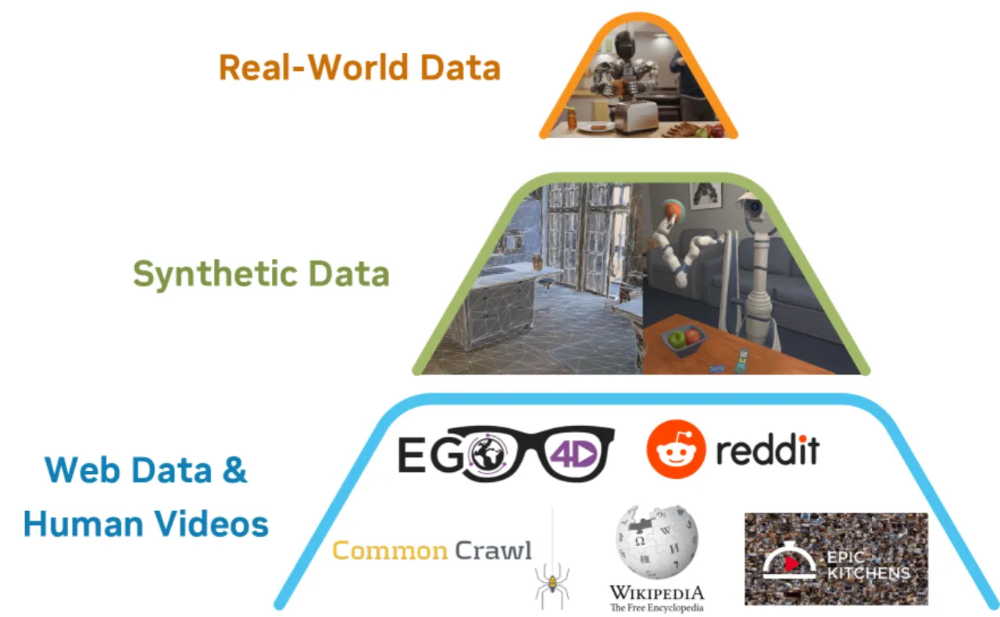
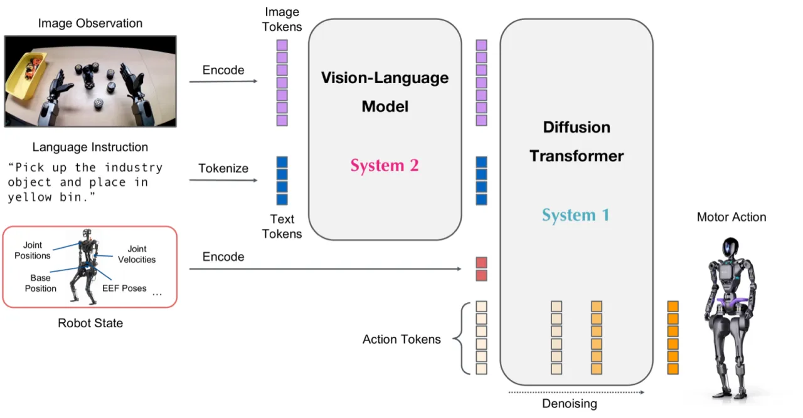
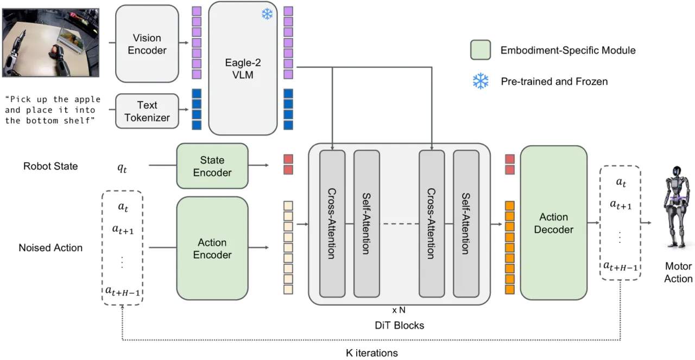
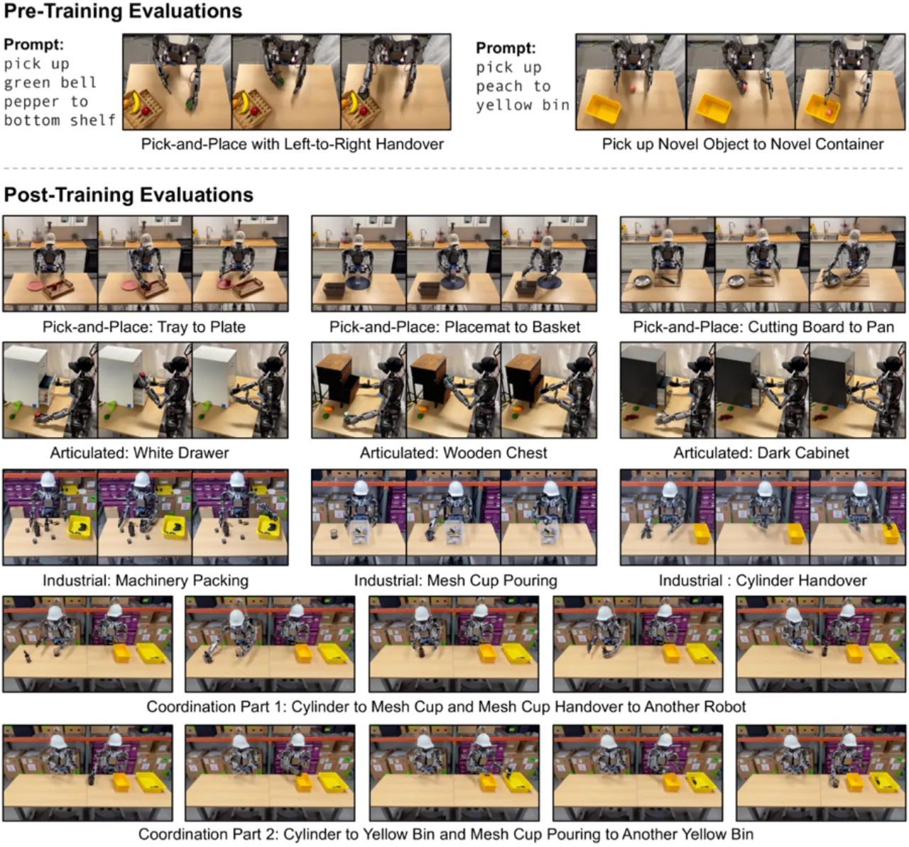
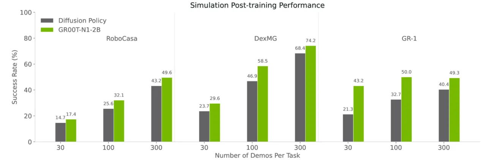

GR00T N1 是 NVIDIA 发布的首个面向通用仿人机器人的开放 Vision-Language-Action (VLA) 基础模型。它采用受认知科学启发的双系统架构：System 2（VLM）负责语言理解与环境推理，System 1（Diffusion Transformer）负责生成低延迟连续动作。模型在仿真和真实 Fourier GR-1 人形机器人上均超越了当前最先进的模仿学习基线。
仿人机器人凭借与人类相近的身体结构，被认为是最适合在人类环境中完成通用任务的载体。然而，现有机器人学习系统要么缺乏语言理解能力，要么依赖单一数据源，无法跨机型和任务迁移——这是制约通用仿人机器人落地的根本瓶颈。GR00T N1 的目标是构建第一个覆盖多机型、多任务、多数据源的开放式机器人基础模型。
"We introduce GR00T N1, a generalist model for humanoid robots. GR00T N1 adopts a dual-system architecture inspired by cognitive science—a vision-language model as the high-level reasoning (System 2) and a diffusion transformer as the low-level action (System 1)."

GR00T N1 的核心是双系统 VLA 架构：高层 System 2 模块为预训练 Vision-Language Model（基于 Eagle-2，10Hz 频率运行），负责语言理解与视觉推理；低层 System 1 模块为 Diffusion Transformer（基于 flow matching 训练，K=4 推理步），负责生成连续的电机动作序列。两个模块在训练阶段联合优化，共享中间表示。训练数据来自异构混合来源：遥操作真实数据、人类视频和合成生成数据（神经轨迹）。


System 2 为预训练 VLM（Eagle-2），在推理阶段以 10Hz 频率运行，将图像 + 语言指令编码为高层语义 token。System 1 为 Diffusion Transformer，采用 flow matching 训练范式，推理时仅需 K=4 步去噪即可生成动作序列，在 L40 GPU（bf16 精度）上推理延迟仅 63.9ms。两个系统通过共享中间 token 紧耦合，联合训练以实现端到端优化。
为弥补真实遥操作数据的稀缺，论文提出利用离线视频生成模型（video generation models）将 88 小时的遥操作视频扩展为约 827 小时的神经轨迹视频——约 10× 放大。神经轨迹生成共消耗约 105k L40 GPU 小时（跨 3600 块 GPU 并行）。仿真侧则在 11 小时内生成了等效于 6,500 小时的仿真轨迹数据，大幅降低了人工遥操作成本。
针对无动作标注的人类视频，模型学习跨机型共享的潜在动作嵌入（latent action embeddings），通过检索相似嵌入实现跨机型知识迁移，使人类视频也能有效参与训练，拓宽了训练数据来源。
实验在仿真和真实机器人两个层面展开。仿真使用 RoboCasa、DexMG、GR-1 三个开源基准，各基准提供 100 条示范轨迹；真实机器人部署在 Fourier GR-1 仿人机器人上，覆盖拾取放置、关节操作、工业场景、双臂协调四类任务。基线方法包括 BC-Transformer 和 Diffusion Policy。
| Benchmark | BC-Transformer | Diffusion Policy | GR00T-N1-2B |
|---|---|---|---|
| RoboCasa | 26.3% | 25.6% | 32.1% |
| DexMG | 53.9% | 56.1% | 66.5% |
| GR-1 | 16.1% | 32.7% | 50.0% |
| Average | 26.4% | 33.4% | 45.0% |
| 任务类型 | Diffusion Policy (10%) | Diffusion Policy (Full) | GR00T-N1-2B (10%) | GR00T-N1-2B (Full) |
|---|---|---|---|---|
| Pick-and-Place | 3.0% | 36.0% | 35.0% | 82.0% |
| Articulated | 14.3% | 38.6% | 62.0% | 70.9% |
| Industrial | 6.7% | 61.0% | 31.0% | 70.0% |
| Coordination | 27.5% | 62.5% | 50.0% | 82.5% |
| Average | 10.2% | 46.4% | 42.6% | 76.8% |
在仅使用 10% 真实数据时，GR00T-N1-2B 的平均成功率（42.6%）已接近 Diffusion Policy 使用全量数据的效果（46.4%），体现了强大的数据效率优势（data efficiency）。


在 RoboCasa 仿真基准上的消融实验表明，加入神经轨迹增强后，在不同数据量级下成功率分别提升 +4.2%、+8.8%、+6.8%，验证了神经轨迹对策略学习的持续正向贡献，且在低数据量（low-data）场景下效果尤为显著。预训练评估方面，在协调双臂任务上成功率达 76.6%（11.5/15），新颖物体操作达 73.3%（11/15）。
"GR00T N1 model focuses primarily on short-horizon tabletop manipulation tasks. In future work, we aim to extend its capabilities to tackle long-horizon loco-manipulation, which will require advancements in humanoid hardware, model architecture, and training corpora."
"existing methods still face challenges in generating diverse and counterfactual data, while adhering to the laws of physics, limiting the quality and variability of synthetic datasets." 当前视频生成模型无法保证精确的物理一致性，合成数据可能引入分布偏移。
生成约 827 小时的神经轨迹视频需要消耗约 105k L40 GPU 小时（跨 3600 块 GPU），对算力资源要求极高，限制了该方法在资源受限场景下的推广。
尽管模型设计支持多机型，但真实机器人实验均在 Fourier GR-1 上完成，跨机型迁移的实际效果有待进一步验证（inferred from the design）。